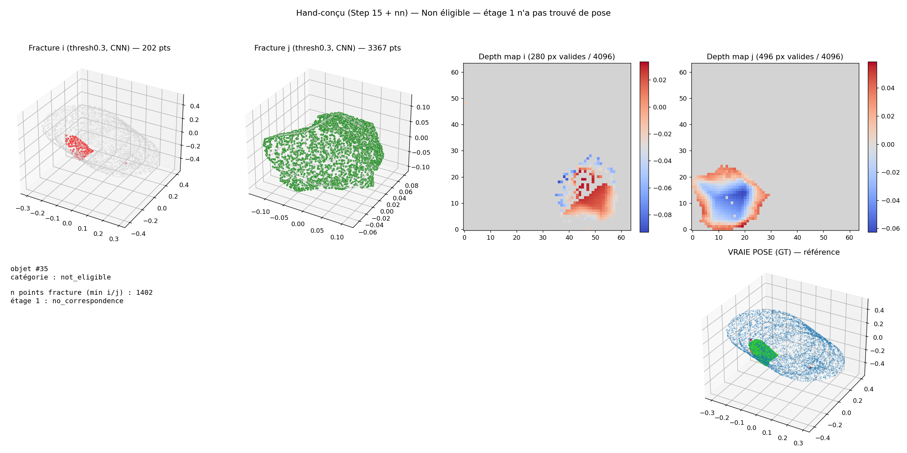
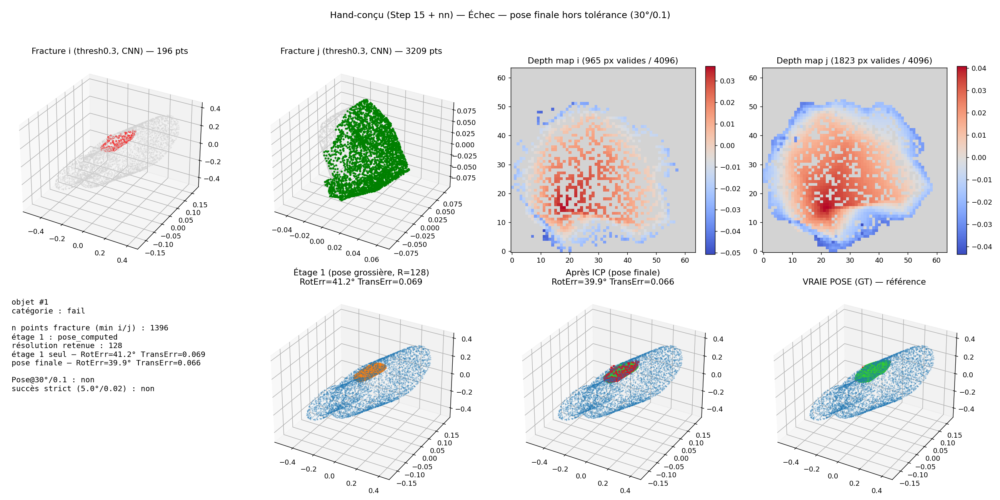
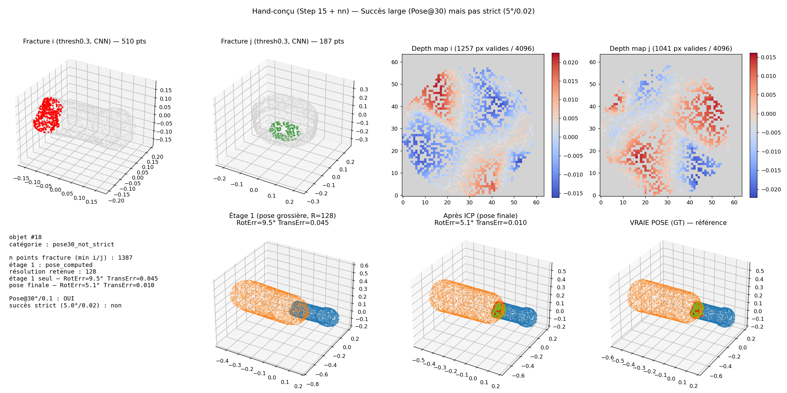
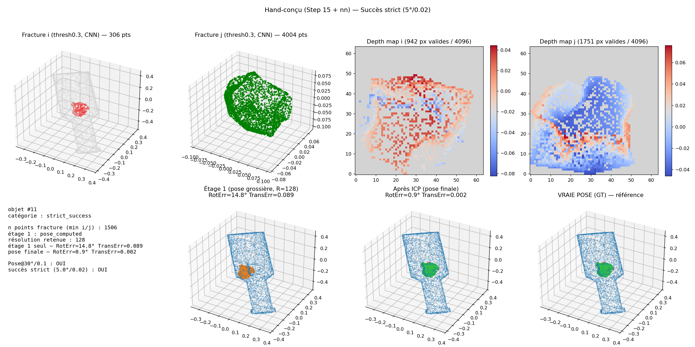
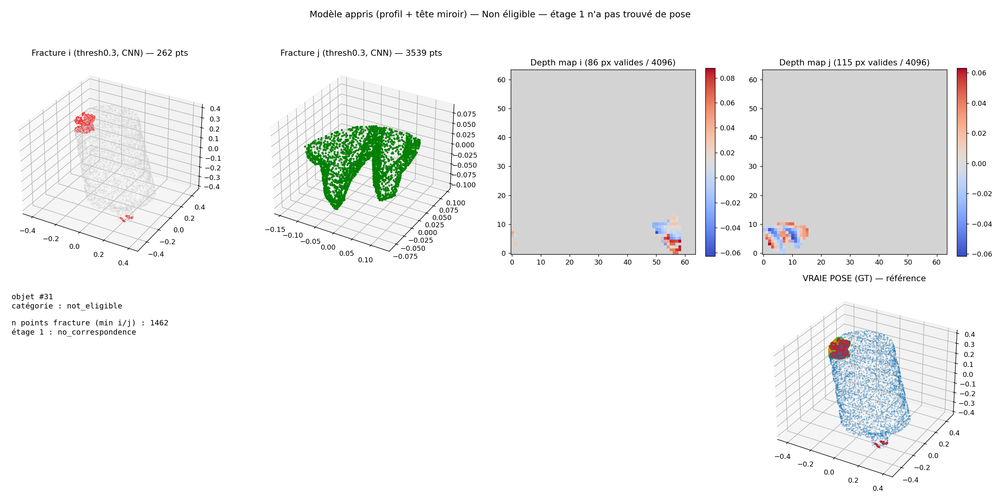
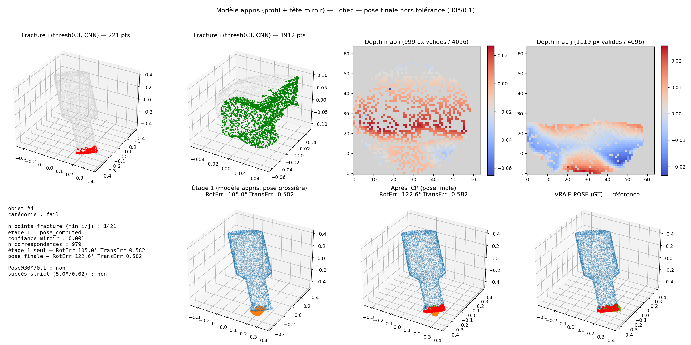
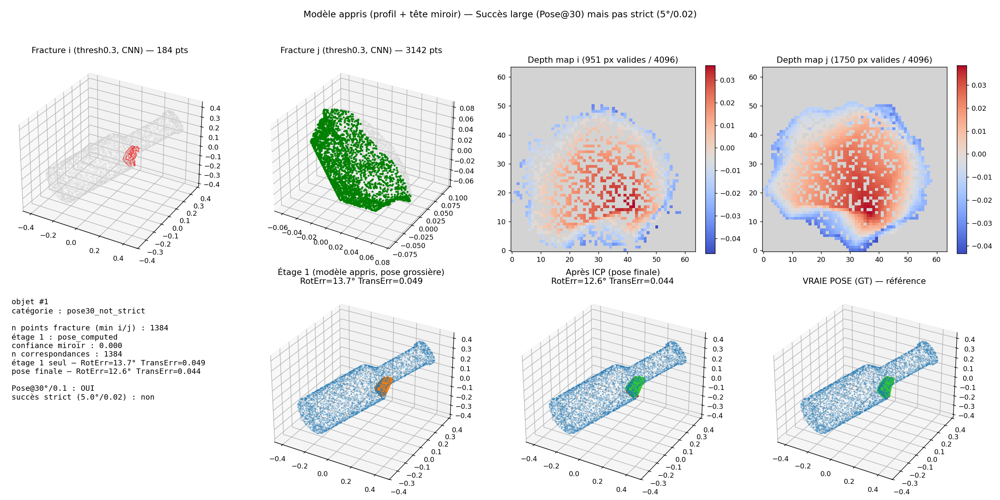
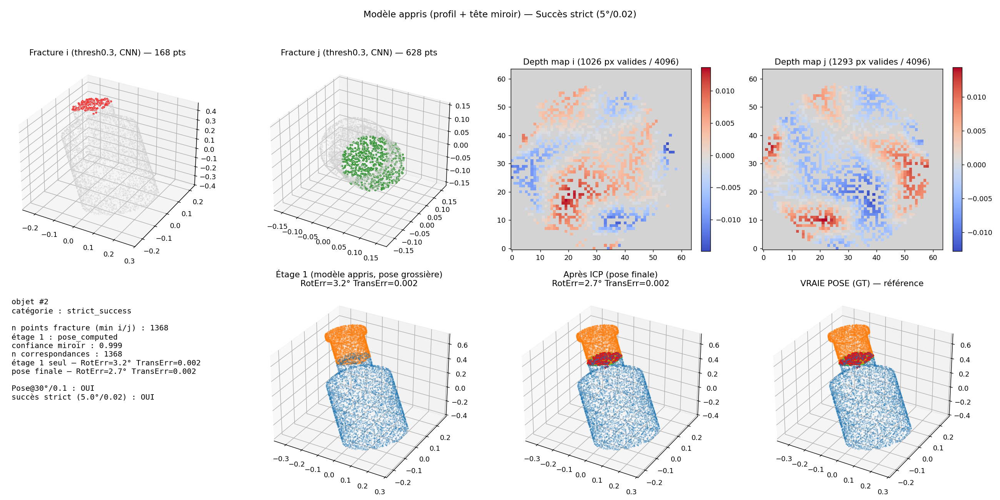

<title>Phase 8 — Un modèle appris pour aligner les fragments</title>
<style>
  :root {
    --bg: #eef1f6;
    --bg-grid: rgba(36, 62, 110, 0.075);
    --surface: #ffffff;
    --surface-2: #f6f8fb;
    --ink: #172033;
    --ink-secondary: #47536a;
    --ink-muted: #7c8797;
    --border: #ccd5e3;
    --border-strong: #a9b6cc;
    --accent: #2453b4;
    --accent-strong: #163a8a;
    --accent-soft: #dbe6fa;
    --accent-line: #6c93dd;
    --good: #1c7a54;
    --good-soft: #d9f0e5;
    --bad: #a8452b;
    --bad-soft: #f7e2db;
    --shadow: 0 1px 0 rgba(23, 32, 51, 0.06);

    --font-display: "Helvetica Neue", Arial, "Segoe UI", sans-serif;
    --font-body: Georgia, "Iowan Old Style", "Palatino Linotype", "Book Antiqua", serif;
    --font-mono: ui-monospace, "SF Mono", "Cascadia Mono", Consolas, "Liberation Mono", monospace;
  }

  @media (prefers-color-scheme: dark) {
    :root {
      --bg: #0b1120;
      --bg-grid: rgba(140, 170, 230, 0.075);
      --surface: #121a2b;
      --surface-2: #0f1626;
      --ink: #e7ecf5;
      --ink-secondary: #aab6cb;
      --ink-muted: #76839b;
      --border: #263454;
      --border-strong: #34456c;
      --accent: #6e9eec;
      --accent-strong: #a6c4f5;
      --accent-soft: #1c2c4d;
      --accent-line: #4d75c4;
      --good: #4fbe8d;
      --good-soft: #123326;
      --bad: #e2795e;
      --bad-soft: #3a1f18;
      --shadow: 0 1px 0 rgba(0, 0, 0, 0.4);
    }
  }
  :root[data-theme="dark"] {
    --bg: #0b1120; --bg-grid: rgba(140, 170, 230, 0.075);
    --surface: #121a2b; --surface-2: #0f1626;
    --ink: #e7ecf5; --ink-secondary: #aab6cb; --ink-muted: #76839b;
    --border: #263454; --border-strong: #34456c;
    --accent: #6e9eec; --accent-strong: #a6c4f5; --accent-soft: #1c2c4d; --accent-line: #4d75c4;
    --good: #4fbe8d; --good-soft: #123326; --bad: #e2795e; --bad-soft: #3a1f18;
    --shadow: 0 1px 0 rgba(0, 0, 0, 0.4);
  }
  :root[data-theme="light"] {
    --bg: #eef1f6; --bg-grid: rgba(36, 62, 110, 0.075);
    --surface: #ffffff; --surface-2: #f6f8fb;
    --ink: #172033; --ink-secondary: #47536a; --ink-muted: #7c8797;
    --border: #ccd5e3; --border-strong: #a9b6cc;
    --accent: #2453b4; --accent-strong: #163a8a; --accent-soft: #dbe6fa; --accent-line: #6c93dd;
    --good: #1c7a54; --good-soft: #d9f0e5; --bad: #a8452b; --bad-soft: #f7e2db;
    --shadow: 0 1px 0 rgba(23, 32, 51, 0.06);
  }

  * { box-sizing: border-box; }
  html { scroll-behavior: smooth; }
  body {
    margin: 0; background: var(--bg); color: var(--ink);
    font-family: var(--font-body); -webkit-font-smoothing: antialiased; overflow-x: hidden;
  }

  @media (prefers-reduced-motion: reduce) {
    * { animation-duration: 0.001ms !important; transition-duration: 0.001ms !important; }
  }

  a { color: var(--accent); }
  :focus-visible { outline: 2px solid var(--accent); outline-offset: 2px; }

  .eyebrow {
    font-family: var(--font-mono); font-size: 0.72rem; letter-spacing: 0.14em;
    text-transform: uppercase; color: var(--accent); font-weight: 600;
  }
  .eyebrow.neg { color: var(--bad); }
  .eyebrow.pos { color: var(--good); }
  .eyebrow .chapter { color: var(--ink-muted); font-weight: 400; }

  h1, h2, h3 {
    font-family: var(--font-display); font-weight: 800; letter-spacing: -0.01em;
    text-wrap: balance; margin: 0; color: var(--ink);
  }

  p { margin: 0; line-height: 1.55; }
  .lede { max-width: 66ch; color: var(--ink-secondary); font-size: 1.05rem; }
  .bridge { max-width: 66ch; color: var(--ink); font-size: 0.98rem; font-style: italic; }

  .sheet {
    position: relative; min-height: 100vh; display: flex; flex-direction: column;
    justify-content: center; padding: 4.5rem clamp(1.25rem, 6vw, 6rem) 5.5rem;
    border-bottom: 1px solid var(--border);
  }

  .sheet-tag {
    position: absolute; bottom: 2.2rem; right: clamp(1.25rem, 6vw, 6rem);
    font-family: var(--font-mono); font-size: 0.68rem; letter-spacing: 0.08em; color: var(--ink-muted);
  }
  .sheet-tag b { color: var(--ink-secondary); }

  .content { max-width: 1080px; margin: 0 auto; width: 100%; display: flex; flex-direction: column; gap: 1.6rem; }

  .cover h1 { font-size: clamp(2.2rem, 5vw, 3.6rem); }
  .cover-meta {
    display: flex; gap: 2.5rem; flex-wrap: wrap;
    font-family: var(--font-mono); font-size: 0.78rem; color: var(--ink-muted);
    border-top: 1px solid var(--border); padding-top: 1rem; margin-top: 0.5rem;
  }
  .cover-meta span b { color: var(--ink-secondary); display: block; font-size: 0.68rem; letter-spacing: .08em; text-transform: uppercase; margin-bottom: .2rem;}

  h2 { font-size: clamp(1.6rem, 3.2vw, 2.3rem); }
  .flow { display: flex; align-items: center; gap: 0; flex-wrap: wrap; margin-top: .5rem; }
  .flow-node {
    font-family: var(--font-mono); font-size: 0.78rem; letter-spacing: .01em;
    padding: 0.55rem 0; color: var(--ink-secondary); border-bottom: 2px solid var(--border-strong);
  }
  .flow-node.ok { border-color: var(--good); color: var(--good); }
  .flow-node.fail { border-color: var(--bad); color: var(--bad); }
  .flow-node.warn { border-color: var(--accent); color: var(--accent); }
  .flow-arrow { font-family: var(--font-mono); color: var(--ink-muted); padding: 0 .7rem; font-size: 1rem; }

  .diagram-card {
    border-top: 1px solid var(--border); border-bottom: 1px solid var(--border);
    padding: 1.8rem clamp(0rem, 2vw, 1rem);
  }
  .diagram-caption { font-family: var(--font-mono); font-size: 0.72rem; color: var(--ink-muted); margin-top: .9rem; text-align: center; letter-spacing: .02em;}
  svg text { font-family: var(--font-mono); }

  .stat-row { display: flex; gap: 2.2rem; flex-wrap: wrap; }
  .stat { border-top: 2px solid var(--border-strong); padding: .9rem 0 0; min-width: 150px; }
  .stat .num { font-family: var(--font-display); font-weight: 800; font-size: 1.9rem; font-variant-numeric: tabular-nums; }
  .stat .num.bad { color: var(--bad); }
  .stat .num.good { color: var(--good); }
  .stat .label { font-family: var(--font-mono); font-size: 0.68rem; letter-spacing: .06em; text-transform: uppercase; color: var(--ink-muted); margin-top: .25rem; }

  .verdict {
    display: inline-flex; align-items: center; gap: .5rem; align-self: flex-start;
    font-family: var(--font-mono); font-size: 0.76rem; letter-spacing: .08em; text-transform: uppercase;
    padding: .5rem .9rem; border-radius: 3px; font-weight: 600;
  }
  .verdict.neg { background: var(--bad-soft); color: var(--bad); border: 1px solid var(--bad); }
  .verdict.pos { background: var(--good-soft); color: var(--good); border: 1px solid var(--good); }
  .verdict.warn { background: var(--accent-soft); color: var(--accent-strong); border: 1px solid var(--accent-line); }
  .verdict::before { content: "●"; font-size: .6rem; }

  .callouts { display: grid; grid-template-columns: repeat(auto-fit, minmax(220px, 1fr)); gap: 1rem; margin-top: .6rem; }
  .callout { border-left: 2px solid var(--accent-line); padding-left: .9rem; }
  .callout p { font-size: 0.92rem; color: var(--ink-secondary); }
  .callout .k { font-family: var(--font-mono); font-size: .7rem; color: var(--accent); text-transform: uppercase; letter-spacing: .06em; display: block; margin-bottom: .3rem; }

  .table-wrap { overflow-x: auto; border-top: 2px solid var(--border-strong); }
  table { border-collapse: collapse; width: 100%; min-width: 640px; font-size: 0.92rem; }
  th, td { text-align: left; padding: .85rem 1.1rem 0.85rem 0; border-bottom: 1px solid var(--border); vertical-align: top; }
  thead th { font-family: var(--font-mono); font-size: .68rem; letter-spacing: .07em; text-transform: uppercase; color: var(--ink-muted); font-weight: 600; }
  tbody tr:last-child td { border-bottom: none; }
  td.path { font-family: var(--font-mono); font-size: .8rem; font-weight: 600; }
  td.num { font-family: var(--font-mono); font-variant-numeric: tabular-nums; }
  td.num.hero { color: var(--accent-strong); font-weight: 700; }
  .dot { display: inline-block; width: 7px; height: 7px; border-radius: 50%; margin-right: .5rem; }
  .dot.neg { background: var(--bad); } .dot.pos { background: var(--good); } .dot.warn { background: var(--accent); }

  .closing-q { border-left: 2px solid var(--accent-line); padding: .2rem 0 .2rem 1.4rem; max-width: 64ch; }
  .closing-q p { color: var(--ink); font-size: 1.05rem; }

  .gallery { display: grid; grid-template-columns: 1fr 1fr; gap: 1.1rem; margin-top: .5rem; }
  .gallery figure { margin: 0; }
  .gallery a { display: block; border: 1px solid var(--border); border-radius: 3px; overflow: hidden; }
  .gallery img { width: 100%; display: block; }
  .gallery figcaption { font-family: var(--font-mono); font-size: 0.74rem; color: var(--ink-secondary); margin-top: .5rem; }
  .gallery figcaption b { color: var(--ink); display: block; margin-bottom: .15rem; }
  .see-also { font-family: var(--font-mono); font-size: 0.76rem; color: var(--ink-muted); }
  .see-also a { color: var(--accent); }

  @media (max-width: 640px) {
    .fork { grid-template-columns: 1fr; }
    .gallery { grid-template-columns: 1fr; }
  }
</style>

<!-- ============================================================ -->
<!-- SHEET 01 — COVER -->
<!-- ============================================================ -->
<section class="sheet cover">
  <div class="content" style="gap: 2rem;">
    <span class="eyebrow">Module de réassemblage — Phase 8 — Point d'avancement</span>
    <h1>Un modèle appris pour aligner les fragments</h1>
    <p class="lede">Le fil de cette phase : le matching main-conçu plafonnait, on a compris pourquoi, décidé de le remplacer, buté sur une complication imprévue, réussi sur le cas parfait, échoué sur le cas réel, diagnostiqué l'échec, corrigé, puis identifié et traité le prochain goulot. Chaque sheet reprend ce fil dans l'ordre.</p>
    <div class="cover-meta">
      <span><b>Acquis, avant cette phase</b>masque de fracture CNN fiable, génération des cartes de profondeur validée, raffinement ICP inchangé</span>
      <span><b>Dataset</b>Breaking Bad — everyday</span>
      <span><b>Statut</b>succès en cascade, du cas parfait aux conditions réelles</span>
    </div>
  </div>
  <span class="sheet-tag"><b>SHEET</b> 01 / 15</span>
</section>

<!-- ============================================================ -->
<!-- SHEET 02 — CHAPITRE 1A : LE PIPELINE EN TROIS ÉTAPES -->
<!-- ============================================================ -->
<section class="sheet">
  <div class="content">
    <span class="eyebrow"><span class="chapter">Chapitre 1 — le pipeline existant ·</span> vue d'ensemble</span>
    <h2>Trois étapes indépendantes, cette phase n'en change qu'une</h2>
    <p class="lede">Avant de parler de ce qui change, un rappel du pipeline tel qu'il existait à la fin de la phase précédente. Trois étapes, chacune avec son propre objectif, chacune réglée séparément.</p>

    <div class="flow" style="margin-top:1rem;">
      <div class="flow-node ok">1 · trouver assez de points sur la fracture</div><div class="flow-arrow">→</div>
      <div class="flow-node fail">2 · trouver la pose grossière (matching)</div><div class="flow-arrow">→</div>
      <div class="flow-node ok">3 · raffiner la pose (ICP)</div>
    </div>

    <p class="bridge">Les étapes 1 et 3 sont acquises et ne bougent pas dans cette phase. C'est l'étape 2, la recherche de pose, qui plafonne. Les deux sheets suivantes détaillent les étapes 1 et 2, pour que les chiffres qui viennent ensuite aient un sens.</p>
  </div>
  <span class="sheet-tag"><b>SHEET</b> 02 / 15</span>
</section>

<!-- ============================================================ -->
<!-- SHEET 03 — CHAPITRE 1B : ÉTAPE 1, ZOOM + CASCADE -->
<!-- ============================================================ -->
<section class="sheet">
  <div class="content">
    <span class="eyebrow"><span class="chapter">Chapitre 1 — étape 1 ·</span> trouver assez de points</span>
    <h2>Une carte de hauteur a besoin d'un minimum de points</h2>
    <p class="lede">Sur beaucoup de paires, l'échantillonnage standard du fragment ne laisse pas assez de points sur la zone de fracture pour construire une carte de hauteur exploitable, avant même que le matching commence. Deux mécanismes comblent ce manque.</p>

    <div class="diagram-card">
      <svg viewBox="0 0 900 170" width="100%" role="img" aria-label="La zone de fracture est localisée sur le maillage complet à partir des quelques points déjà connus, puis de nouveaux points sont tirés densément à l'intérieur de cette zone.">
        <defs>
          <marker id="a4" viewBox="0 0 10 10" refX="8" refY="5" markerWidth="7" markerHeight="7" orient="auto-start-reverse">
            <path d="M0,0 L10,5 L0,10 z" fill="var(--ink-muted)"></path>
          </marker>
        </defs>
        <g transform="translate(20,20)">
          <text x="0" y="0" font-size="10" fill="var(--ink-muted)">points de fracture, échantillonnage standard</text>
          <ellipse cx="90" cy="70" rx="95" ry="55" fill="none" stroke="var(--border)" stroke-width="1.2"></ellipse>
          <g fill="var(--bad)">
            <circle cx="150" cy="40" r="3"></circle><circle cx="165" cy="60" r="3"></circle><circle cx="145" cy="85" r="3"></circle>
          </g>
          <text x="90" y="140" text-anchor="middle" font-size="9" fill="var(--bad)">trop peu de points sur la fracture</text>
        </g>

        <line x1="255" y1="85" x2="300" y2="85" stroke="var(--ink-muted)" stroke-width="1.5" marker-end="url(#a4)"></line>
        <text x="277" y="75" text-anchor="middle" font-size="9" fill="var(--ink-secondary)">localise</text>

        <g transform="translate(310,20)">
          <text x="0" y="0" font-size="10" fill="var(--ink-muted)">zone de fracture repérée sur le maillage</text>
          <ellipse cx="90" cy="70" rx="95" ry="55" fill="none" stroke="var(--border)" stroke-width="1.2"></ellipse>
          <circle cx="153" cy="60" r="30" fill="var(--accent-soft)" stroke="var(--accent-line)" stroke-width="1.3" stroke-dasharray="3 3"></circle>
          <g fill="var(--bad)">
            <circle cx="150" cy="40" r="3"></circle><circle cx="165" cy="60" r="3"></circle><circle cx="145" cy="85" r="3"></circle>
          </g>
        </g>

        <line x1="545" y1="85" x2="590" y2="85" stroke="var(--ink-muted)" stroke-width="1.5" marker-end="url(#a4)"></line>
        <text x="567" y="75" text-anchor="middle" font-size="9" fill="var(--ink-secondary)">tire dedans</text>

        <g transform="translate(600,20)">
          <text x="0" y="0" font-size="10" fill="var(--ink-muted)">points supplémentaires, tirés dans la zone</text>
          <ellipse cx="90" cy="70" rx="95" ry="55" fill="none" stroke="var(--border)" stroke-width="1.2"></ellipse>
          <g fill="var(--good)">
            <circle cx="150" cy="40" r="3"></circle><circle cx="165" cy="60" r="3"></circle><circle cx="145" cy="85" r="3"></circle>
            <circle cx="140" cy="48" r="2.4"></circle><circle cx="158" cy="45" r="2.4"></circle><circle cx="170" cy="72" r="2.4"></circle>
            <circle cx="155" cy="78" r="2.4"></circle><circle cx="135" cy="65" r="2.4"></circle><circle cx="163" cy="55" r="2.4"></circle>
            <circle cx="145" cy="72" r="2.4"></circle><circle cx="130" cy="55" r="2.4"></circle>
          </g>
          <text x="90" y="140" text-anchor="middle" font-size="9" fill="var(--good)">carte de hauteur exploitable</text>
        </g>
      </svg>
      <p class="diagram-caption">zoom + rééchantillonnage local : mêmes fragments, juste plus de points là où ça compte</p>
    </div>

    <div class="diagram-card" style="border-top:none; padding-top:0;">
      <svg viewBox="0 0 900 110" width="100%" role="img" aria-label="Si la résolution fine ne donne pas assez de correspondances, la cascade replie automatiquement vers une résolution plus grossière jusqu'à ce que ça fonctionne.">
        <defs>
          <marker id="a4b" viewBox="0 0 10 10" refX="8" refY="5" markerWidth="7" markerHeight="7" orient="auto-start-reverse">
            <path d="M0,0 L10,5 L0,10 z" fill="var(--ink-muted)"></path>
          </marker>
        </defs>
        <g font-size="10" text-anchor="middle">
          <rect x="0" y="20" width="80" height="36" rx="3" fill="none" stroke="var(--bad)" stroke-width="1.3"></rect>
          <text x="40" y="42" fill="var(--bad)">R=128</text>
          <text x="40" y="70" fill="var(--bad)">✗ trop peu</text>

          <line x1="80" y1="38" x2="120" y2="38" stroke="var(--ink-muted)" stroke-width="1.3" marker-end="url(#a4b)"></line>

          <rect x="128" y="20" width="80" height="36" rx="3" fill="none" stroke="var(--bad)" stroke-width="1.3"></rect>
          <text x="168" y="42" fill="var(--bad)">R=64</text>
          <text x="168" y="70" fill="var(--bad)">✗ trop peu</text>

          <line x1="208" y1="38" x2="248" y2="38" stroke="var(--ink-muted)" stroke-width="1.3" marker-end="url(#a4b)"></line>

          <text x="280" y="42" fill="var(--ink-muted)">…</text>

          <line x1="300" y1="38" x2="340" y2="38" stroke="var(--ink-muted)" stroke-width="1.3" marker-end="url(#a4b)"></line>

          <rect x="348" y="20" width="80" height="36" rx="3" fill="none" stroke="var(--good)" stroke-width="1.6"></rect>
          <text x="388" y="42" fill="var(--good)">R=24</text>
          <text x="388" y="70" fill="var(--good)">✓ retenue</text>

          <text x="620" y="15" fill="var(--ink-muted)" font-size="9">résolution fine, précise, d'abord</text>
          <text x="620" y="42" fill="var(--ink-secondary)" font-weight="600">repli automatique vers du plus grossier</text>
          <text x="620" y="65" fill="var(--ink-muted)" font-size="9">jusqu'à ≥3 correspondances</text>
        </g>
      </svg>
      <p class="diagram-caption">cascade de résolution : la plupart des paires récupérées ont besoin de plusieurs replis (médiane de 8 niveaux essayés sur 9)</p>
    </div>

    <p class="bridge">Combinés, ces deux mécanismes font passer les paires sans aucune correspondance possible de 73.6% à 48.1% des cas. C'est ce qui rend l'étape 2, la recherche de pose elle-même, exploitable sur la majorité des paires. Voyons maintenant comment elle fonctionne.</p>
  </div>
  <span class="sheet-tag"><b>SHEET</b> 03 / 15</span>
</section>

<!-- ============================================================ -->
<!-- SHEET 04 — CHAPITRE 1C : ÉTAPE 2, LE HAND-CONÇU -->
<!-- ============================================================ -->
<section class="sheet">
  <div class="content">
    <span class="eyebrow"><span class="chapter">Chapitre 1 — étape 2 ·</span> la recherche de pose</span>
    <h2>Une recherche exhaustive d'angle, pas un apprentissage</h2>
    <p class="lede">Une fois les points de fracture réunis (étape 1), chaque surface est aplatie en une petite carte de hauteur, comme une carte de relief. Le hand-conçu essaie ensuite un grand nombre d'angles de rotation discrets, et pour chacun cherche le décalage qui rend les deux cartes complémentaires : un creux d'un côté doit tomber en face d'une bosse de l'autre.</p>

    <div class="diagram-card">
      <svg viewBox="0 0 900 150" width="100%" role="img" aria-label="Chaque surface de fracture est aplatie en carte de hauteur, puis une recherche exhaustive teste des angles discrets et retient celui dont le score de complémentarité est le meilleur.">
        <g transform="translate(20,20)">
          <text x="0" y="0" font-size="10" fill="var(--ink-muted)">carte de hauteur, fragment i</text>
          <g transform="translate(0,15)" fill="var(--accent-soft)" stroke="var(--surface)" stroke-width="1.5">
            <rect x="0" y="0" width="18" height="18"></rect><rect x="18" y="0" width="18" height="18" fill="var(--accent-line)"></rect><rect x="36" y="0" width="18" height="18"></rect>
            <rect x="0" y="18" width="18" height="18" fill="var(--accent-line)"></rect><rect x="18" y="18" width="18" height="18" fill="var(--accent)"></rect><rect x="36" y="18" width="18" height="18" fill="var(--accent-line)"></rect>
            <rect x="0" y="36" width="18" height="18"></rect><rect x="18" y="36" width="18" height="18" fill="var(--accent-line)"></rect><rect x="36" y="36" width="18" height="18"></rect>
          </g>
        </g>
        <g transform="translate(180,20)">
          <text x="0" y="0" font-size="10" fill="var(--ink-muted)">carte de hauteur, fragment j</text>
          <g transform="translate(0,15)" fill="var(--accent-soft)" stroke="var(--surface)" stroke-width="1.5">
            <rect x="0" y="0" width="18" height="18"></rect><rect x="18" y="0" width="18" height="18"></rect><rect x="36" y="0" width="18" height="18" fill="var(--accent-line)"></rect>
            <rect x="0" y="18" width="18" height="18"></rect><rect x="18" y="18" width="18" height="18" fill="var(--accent-line)"></rect><rect x="36" y="18" width="18" height="18" fill="var(--accent)"></rect>
            <rect x="0" y="36" width="18" height="18" fill="var(--accent-line)"></rect><rect x="18" y="36" width="18" height="18"></rect><rect x="36" y="36" width="18" height="18"></rect>
          </g>
        </g>

        <line x1="330" y1="65" x2="380" y2="65" stroke="var(--ink-muted)" stroke-width="1.5"></line>
        <text x="355" y="55" text-anchor="middle" font-size="9" fill="var(--ink-secondary)">essaie chaque angle</text>

        <g transform="translate(390,20)">
          <text x="0" y="0" font-size="10" fill="var(--ink-muted)">score de complémentarité par angle testé</text>
          <line x1="0" y1="60" x2="220" y2="60" stroke="var(--border)" stroke-width="1"></line>
          <g fill="var(--border-strong)">
            <rect x="0" y="40" width="10" height="20"></rect><rect x="14" y="30" width="10" height="30"></rect><rect x="28" y="45" width="10" height="15"></rect>
            <rect x="42" y="15" width="10" height="45" fill="var(--good)"></rect>
            <rect x="56" y="35" width="10" height="25"></rect><rect x="70" y="42" width="10" height="18"></rect><rect x="84" y="25" width="10" height="35"></rect>
            <rect x="98" y="48" width="10" height="12"></rect><rect x="112" y="38" width="10" height="22"></rect><rect x="126" y="20" width="10" height="40"></rect>
            <rect x="140" y="44" width="10" height="16"></rect><rect x="154" y="33" width="10" height="27"></rect><rect x="168" y="50" width="10" height="10"></rect>
            <rect x="182" y="40" width="10" height="20"></rect><rect x="196" y="46" width="10" height="14"></rect><rect x="210" y="36" width="10" height="24"></rect>
          </g>
          <text x="47" y="78" text-anchor="middle" font-size="8.5" fill="var(--good)">meilleur angle retenu</text>
        </g>
      </svg>
      <p class="diagram-caption">un pas angulaire fixe (10° par défaut), pas de correction fine, la précision s'arrête là où le pas s'arrête</p>
    </div>

    <p class="bridge">Deux limites structurelles, indépendantes de la qualité du masque : les fractures de Breaking Bad sont presque planes, donc le signal de complémentarité est souvent faible, et la recherche ne teste que des angles discrets. Voyons maintenant ce que ça donne en chiffres, et pourquoi on a fini par arrêter d'essayer de la réparer.</p>
  </div>
  <span class="sheet-tag"><b>SHEET</b> 04 / 15</span>
</section>

<!-- ============================================================ -->
<!-- SHEET 05 — CHAPITRE 1D : LE BILAN ET LA DÉCISION -->
<!-- ============================================================ -->
<section class="sheet">
  <div class="content">
    <span class="eyebrow"><span class="chapter">Chapitre 1 — bilan ·</span> pourquoi on a arrêté de réparer l'étape 2</span>
    <h2>Le masque n'était pas le problème, quatre tentatives l'ont confirmé</h2>

    <div class="stat-row">
      <div class="stat"><div class="num">62.6%</div><div class="label">éligibilité étage 1<br>(pipeline complet, 1+2+3)</div></div>
      <div class="stat"><div class="num">14.7%</div><div class="label">Pose@30° (219 paires)<br>barre à dépasser</div></div>
      <div class="stat"><div class="num">6.8%</div><div class="label">succès strict (101 paires)<br>barre à dépasser</div></div>
    </div>

    <div class="callouts">
      <div class="callout"><span class="k">éligibilité</span><p>Sur une paire de fragments, il faut trouver au moins 3 points qui se correspondent d'un fragment à l'autre pour pouvoir calculer une transformation rigide. L'éligibilité, c'est la part des paires où ce minimum est atteint, que la pose obtenue soit ensuite bonne ou mauvaise, un pré-requis, pas une mesure de qualité.</p></div>
      <div class="callout"><span class="k">Pose@30 / succès strict</span><p>Parmi TOUTES les paires, la part dont la pose finale, une fois l'ICP passé, tombe sous un seuil d'erreur donné : large pour Pose@30 (30° / 10 cm), strict pour succès strict. C'est la vraie mesure de qualité.</p></div>
    </div>

    <p class="lede" style="font-size:0.96rem;">Quatre tentatives successives d'améliorer la précision du masque de fracture, en amont de l'étape 2, ont toutes échoué à faire bouger ces chiffres.</p>

    <div class="flow" style="margin-top:.3rem;">
      <div class="flow-node fail">regroupement des points</div><div class="flow-arrow">→</div>
      <div class="flow-node fail">repère PCA plus robuste</div><div class="flow-arrow">→</div>
      <div class="flow-node fail">suppression des petits amas</div><div class="flow-arrow">→</div>
      <div class="flow-node fail">nouvelle perte d'entraînement du CNN</div>
    </div>

    <p class="lede" style="font-size:0.96rem;">Quatre échecs indépendants sur l'entrée (le masque) pointent tous vers la même conclusion : le problème n'est pas ce qu'on donne à la recherche, c'est la recherche elle-même, un mécanisme rigide sur un signal souvent faible. Décision : arrêter de nettoyer le masque, remplacer directement l'étape 2 par un modèle appris.</p>

    <span class="verdict warn">Décision : remplacer l'étape 2 par un modèle appris</span>
    <p class="see-also">Voir des exemples concrets de chaque cas → <a href="#annexe-handcrafted">annexe, sheet 14</a></p>
  </div>
  <span class="sheet-tag"><b>SHEET</b> 05 / 15</span>
</section>

<!-- ============================================================ -->
<!-- SHEET 06 — CHAPITRE 2A : L'IDÉE -->
<!-- ============================================================ -->
<section class="sheet">
  <div class="content">
    <span class="eyebrow"><span class="chapter">Chapitre 2 — remplacer l'étape 2 ·</span> l'idée</span>
    <h2>Regarder les deux cartes de profondeur ensemble, prédire la pose directement</h2>
    <p class="lede">Un petit réseau siamois encode chaque carte de profondeur, les deux représentations sont combinées, et une tête prédit directement l'angle et le décalage qui alignent les deux fragments. Plus de recherche exhaustive sur des angles discrets, la pose est prédite en un passage.</p>

    <div class="diagram-card">
      <svg viewBox="0 0 900 210" width="100%" role="img" aria-label="Deux cartes de profondeur passent par un encodeur siamois à poids partagés, sont combinées, puis une tête MLP prédit theta et le décalage.">
        <defs>
          <marker id="a1" viewBox="0 0 10 10" refX="8" refY="5" markerWidth="7" markerHeight="7" orient="auto-start-reverse">
            <path d="M0,0 L10,5 L0,10 z" fill="var(--ink-muted)"></path>
          </marker>
        </defs>

        <g transform="translate(10,40)">
          <g fill="var(--accent-soft)" stroke="var(--surface)" stroke-width="1.5">
            <rect x="0" y="0" width="18" height="18"></rect><rect x="18" y="0" width="18" height="18"></rect><rect x="36" y="0" width="18" height="18"></rect>
            <rect x="0" y="18" width="18" height="18" fill="var(--accent-line)"></rect><rect x="18" y="18" width="18" height="18" fill="var(--accent)"></rect><rect x="36" y="18" width="18" height="18" fill="var(--accent-line)"></rect>
            <rect x="0" y="36" width="18" height="18"></rect><rect x="18" y="36" width="18" height="18"></rect><rect x="36" y="36" width="18" height="18"></rect>
          </g>
          <text x="27" y="72" text-anchor="middle" font-size="10" fill="var(--ink-secondary)">carte i</text>
        </g>
        <line x1="65" y1="70" x2="110" y2="70" stroke="var(--ink-muted)" stroke-width="1.5" marker-end="url(#a1)"></line>

        <g transform="translate(10,120)">
          <g fill="var(--accent-soft)" stroke="var(--surface)" stroke-width="1.5">
            <rect x="0" y="0" width="18" height="18"></rect><rect x="18" y="0" width="18" height="18" fill="var(--accent-line)"></rect><rect x="36" y="0" width="18" height="18"></rect>
            <rect x="0" y="18" width="18" height="18"></rect><rect x="18" y="18" width="18" height="18" fill="var(--accent)"></rect><rect x="36" y="18" width="18" height="18" fill="var(--accent-line)"></rect>
            <rect x="0" y="36" width="18" height="18"></rect><rect x="18" y="36" width="18" height="18"></rect><rect x="36" y="36" width="18" height="18"></rect>
          </g>
          <text x="27" y="72" text-anchor="middle" font-size="10" fill="var(--ink-secondary)">carte j</text>
        </g>
        <line x1="65" y1="150" x2="110" y2="150" stroke="var(--ink-muted)" stroke-width="1.5" marker-end="url(#a1)"></line>

        <g transform="translate(115,45)">
          <rect x="0" y="0" width="60" height="50" rx="3" fill="none" stroke="var(--border-strong)" stroke-width="1.3"></rect>
          <rect x="0" y="80" width="60" height="50" rx="3" fill="none" stroke="var(--border-strong)" stroke-width="1.3"></rect>
          <text x="30" y="30" text-anchor="middle" font-size="9.5" fill="var(--ink-secondary)">encodeur</text>
          <text x="30" y="110" text-anchor="middle" font-size="9.5" fill="var(--ink-secondary)">encodeur</text>
          <text x="30" y="-10" text-anchor="middle" font-size="9" fill="var(--ink-muted)">poids partagés</text>
        </g>

        <line x1="175" y1="70" x2="220" y2="90" stroke="var(--ink-muted)" stroke-width="1.2" marker-end="url(#a1)"></line>
        <line x1="175" y1="150" x2="220" y2="100" stroke="var(--ink-muted)" stroke-width="1.2" marker-end="url(#a1)"></line>

        <g transform="translate(225,75)">
          <rect x="0" y="0" width="18" height="40" fill="var(--accent)"></rect>
          <text x="9" y="55" text-anchor="middle" font-size="9" fill="var(--ink-muted)">f_i, f_j</text>
          <text x="9" y="68" text-anchor="middle" font-size="8.5" fill="var(--ink-muted)">+ f_i−f_j, f_i×f_j</text>
        </g>

        <line x1="250" y1="95" x2="300" y2="95" stroke="var(--ink-muted)" stroke-width="1.5" marker-end="url(#a1)"></line>

        <g transform="translate(305,40)">
          <text x="80" y="-14" text-anchor="middle" font-size="9" fill="var(--ink-muted)">MLP</text>
          <g stroke="var(--border-strong)" stroke-width="1">
            <line x1="10" y1="10" x2="80" y2="30"></line><line x1="10" y1="35" x2="80" y2="30"></line><line x1="10" y1="60" x2="80" y2="30"></line><line x1="10" y1="85" x2="80" y2="30"></line>
            <line x1="10" y1="10" x2="80" y2="75"></line><line x1="10" y1="35" x2="80" y2="75"></line><line x1="10" y1="60" x2="80" y2="75"></line><line x1="10" y1="85" x2="80" y2="75"></line>
            <line x1="80" y1="30" x2="150" y2="45"></line><line x1="80" y1="75" x2="150" y2="45"></line><line x1="80" y1="30" x2="150" y2="65"></line><line x1="80" y1="75" x2="150" y2="65"></line>
          </g>
          <g fill="var(--surface)" stroke="var(--accent-line)" stroke-width="1.3">
            <circle cx="10" cy="10" r="5"></circle><circle cx="10" cy="35" r="5"></circle><circle cx="10" cy="60" r="5"></circle><circle cx="10" cy="85" r="5"></circle>
            <circle cx="80" cy="30" r="5"></circle><circle cx="80" cy="75" r="5"></circle>
            <circle cx="150" cy="45" r="5"></circle><circle cx="150" cy="65" r="5"></circle>
          </g>
        </g>

        <line x1="465" y1="90" x2="510" y2="90" stroke="var(--ink-muted)" stroke-width="1.5" marker-end="url(#a1)"></line>

        <g transform="translate(520,60)">
          <text x="0" y="0" font-size="11" fill="var(--ink)" font-weight="600">(θ, shift_y, shift_x)</text>
          <text x="0" y="20" font-size="9.5" fill="var(--ink-muted)">pose relative i → j</text>
          <text x="0" y="40" font-size="9" fill="var(--ink-muted)">sin/cos de θ en sortie,</text>
          <text x="0" y="53" font-size="9" fill="var(--ink-muted)">pour éviter la discontinuité de l'angle</text>
        </g>
      </svg>
      <p class="diagram-caption">encodeur ~100K paramètres, entraîné sur les vraies cartes de profondeur issues du masque CNN, pas sur un cas idéal</p>
    </div>

    <p class="bridge">Reste à pouvoir entraîner ce modèle. La construction des données d'entraînement a réservé une surprise, avant même le premier entraînement.</p>
  </div>
  <span class="sheet-tag"><b>SHEET</b> 06 / 15</span>
</section>

<!-- ============================================================ -->
<!-- SHEET 07 — CHAPITRE 2B : L'AMBIGUÏTÉ MIROIR -->
<!-- ============================================================ -->
<section class="sheet">
  <div class="content">
    <span class="eyebrow warn"><span class="chapter">Chapitre 2 — complication trouvée en construisant les données ·</span></span>
    <h2>Une deuxième ambiguïté, indépendante, et fréquente</h2>
    <p class="lede">Chaque carte de hauteur est construite à plat, sans savoir a priori "de quel côté on regarde" la surface. C'est comme regarder une pièce de puzzle vue de dessus, puis retournée : sa silhouette et son relief ressemblent à s'y méprendre, mais une seule des deux orientations correspond à la vraie pièce en 3D. Pour le fragment j, deux orientations différentes peuvent produire des cartes de profondeur presque identiques, une vraie et une inversée, et rien dans la carte seule ne permet de trancher.</p>

    <div class="diagram-card">
      <svg viewBox="0 0 900 180" width="100%" role="img" aria-label="Deux hypothèses d'orientation pour le fragment j, normale et miroir, produisent des cartes de profondeur très proches mais une seule correspond à la vraie pose.">
        <g transform="translate(40,20)">
          <text x="0" y="0" font-size="10" fill="var(--ink-muted)">fragment i (référence)</text>
          <g transform="translate(0,20)" fill="var(--accent-soft)" stroke="var(--surface)" stroke-width="1.5">
            <rect x="0" y="0" width="20" height="20"></rect><rect x="20" y="0" width="20" height="20" fill="var(--accent-line)"></rect><rect x="40" y="0" width="20" height="20"></rect>
            <rect x="0" y="20" width="20" height="20" fill="var(--accent-line)"></rect><rect x="20" y="20" width="20" height="20" fill="var(--accent)"></rect><rect x="40" y="20" width="20" height="20" fill="var(--accent-line)"></rect>
            <rect x="0" y="40" width="20" height="20"></rect><rect x="20" y="40" width="20" height="20" fill="var(--accent-line)"></rect><rect x="40" y="40" width="20" height="20"></rect>
          </g>
        </g>

        <g transform="translate(280,20)">
          <text x="0" y="0" font-size="10" fill="var(--good)">hypothèse normale</text>
          <g transform="translate(0,20)" fill="var(--good-soft)" stroke="var(--surface)" stroke-width="1.5">
            <rect x="0" y="0" width="20" height="20"></rect><rect x="20" y="0" width="20" height="20" fill="var(--good)" opacity="0.5"></rect><rect x="40" y="0" width="20" height="20"></rect>
            <rect x="0" y="20" width="20" height="20" fill="var(--good)" opacity="0.5"></rect><rect x="20" y="20" width="20" height="20" fill="var(--good)"></rect><rect x="40" y="20" width="20" height="20" fill="var(--good)" opacity="0.5"></rect>
            <rect x="0" y="40" width="20" height="20"></rect><rect x="20" y="40" width="20" height="20" fill="var(--good)" opacity="0.5"></rect><rect x="40" y="40" width="20" height="20"></rect>
          </g>
          <text x="30" y="95" text-anchor="middle" font-size="16" fill="var(--good)">✓</text>
          <text x="30" y="112" text-anchor="middle" font-size="9" fill="var(--ink-muted)">rot_err moyen 2.18°</text>
        </g>

        <g transform="translate(520,20)">
          <text x="0" y="0" font-size="10" fill="var(--bad)">hypothèse miroir (v inversé)</text>
          <g transform="translate(0,20)" fill="var(--bad-soft)" stroke="var(--surface)" stroke-width="1.5" transform-origin="30 30">
            <g transform="scale(1,-1) translate(0,-60)">
              <rect x="0" y="0" width="20" height="20"></rect><rect x="20" y="0" width="20" height="20" fill="var(--bad)" opacity="0.5"></rect><rect x="40" y="0" width="20" height="20"></rect>
              <rect x="0" y="20" width="20" height="20" fill="var(--bad)" opacity="0.5"></rect><rect x="20" y="20" width="20" height="20" fill="var(--bad)"></rect><rect x="40" y="20" width="20" height="20" fill="var(--bad)" opacity="0.5"></rect>
              <rect x="0" y="40" width="20" height="20"></rect><rect x="20" y="40" width="20" height="20" fill="var(--bad)" opacity="0.5"></rect><rect x="40" y="40" width="20" height="20"></rect>
            </g>
          </g>
          <text x="30" y="95" text-anchor="middle" font-size="16" fill="var(--bad)">✗</text>
          <text x="30" y="112" text-anchor="middle" font-size="9" fill="var(--ink-muted)">rot_err moyen 172.7°</text>
        </g>

        <text x="450" y="165" text-anchor="middle" font-size="10" fill="var(--ink-secondary)">les deux cartes se ressemblent presque, seule la vraie pose 3D dit laquelle est correcte</text>
      </svg>
      <p class="diagram-caption">mesuré sur 1251 paires réelles : 52.2% des paires ont besoin du miroir, ce n'est pas un cas rare</p>
    </div>

    <p class="bridge">Conséquence directe sur la conception du modèle : il doit tester les deux hypothèses d'orientation et choisir la plus confiante, en plus de prédire l'angle et le décalage. Le modèle a été construit avec ça en tête dès le départ, voyons s'il fonctionne.</p>
  </div>
  <span class="sheet-tag"><b>SHEET</b> 07 / 15</span>
</section>

<!-- ============================================================ -->
<!-- SHEET 08 — CHAPITRE 2C : RÉSULTAT GT -->
<!-- ============================================================ -->
<section class="sheet">
  <div class="content">
    <span class="eyebrow pos"><span class="chapter">Chapitre 2 — premier test ·</span> masque parfait (GT)</span>
    <h2>Sur données parfaites, le modèle appris bat déjà le hand-conçu</h2>
    <p class="lede">Avant de tester sur le masque bruité du CNN, validation d'abord sur le masque de vérité terrain. Objectif : vérifier que l'architecture et la boucle d'entraînement fonctionnent dans le cas le plus favorable, avant de se demander si elles tiennent face au bruit réel.</p>

    <div class="table-wrap">
      <table>
        <thead><tr><th>Métrique</th><th>Hand-conçu (Step 15 + nn)</th><th>Modèle appris (GT)</th></tr></thead>
        <tbody>
          <tr><td class="path">Éligibilité étage 1</td><td class="num">99.1%</td><td class="num">83.8%</td></tr>
          <tr><td class="path">Pose@30° global</td><td class="num">37.6% (219 paires)</td><td class="num hero">55.3% (823 paires)</td></tr>
          <tr><td class="path">Succès strict global</td><td class="num">23.2% (101 paires)</td><td class="num hero">39.7% (590 paires)</td></tr>
        </tbody>
      </table>
    </div>
    <p class="diagram-caption">1487 objets à deux fragments, everyday/val, comparaison plutôt conservatrice en faveur du hand-conçu</p>

    <div class="callouts">
      <div class="callout"><span class="k">un vrai gain</span><p>Le modèle appris fait mieux en absolu sur Pose@30 et succès strict, malgré une éligibilité plus basse.</p></div>
      <div class="callout"><span class="k">l'éligibilité plus basse s'explique</span><p>Le maillon faible est déjà le choix miroir, correct sur 72.4% des cas de validation seulement, cohérent avec la complication du sheet précédent.</p></div>
    </div>

    <span class="verdict pos">Succès sur le cas idéal</span>
    <p class="bridge">L'architecture fonctionne. Reste la vraie question, jamais résolue par un cas idéal : tient-elle sur le masque CNN réel, bruité ?</p>
  </div>
  <span class="sheet-tag"><b>SHEET</b> 08 / 15</span>
</section>

<!-- ============================================================ -->
<!-- SHEET 09 — CHAPITRE 3A : ÉCHEC SUR DONNÉES RÉELLES -->
<!-- ============================================================ -->
<section class="sheet">
  <div class="content">
    <span class="eyebrow neg"><span class="chapter">Chapitre 3 — retour aux données réelles ·</span> thresh0.3</span>
    <h2>Le modèle mémorise, il n'apprend pas encore une vraie compétence géométrique</h2>
    <p class="lede">Sur le masque CNN réel, le premier entraînement échoue : sur-apprentissage sévère. Trois pistes raisonnables testées pour le corriger, toutes négatives ou ambiguës.</p>

    <div class="flow" style="margin-top:.5rem;">
      <div class="flow-node fail">plus de volume de données</div><div class="flow-arrow">→</div>
      <div class="flow-node fail">train/val cohérents</div><div class="flow-arrow">→</div>
      <div class="flow-node fail">augmentation par rotation</div>
    </div>

    <p class="lede" style="font-size:0.96rem;">Aucune des trois ne résout le problème, la dernière dégrade même la performance sur les données d'entraînement elles-mêmes, signe que ce n'est pas un problème de réglage mais d'architecture.</p>

    <div class="diagram-card">
      <svg viewBox="0 0 900 130" width="100%" role="img" aria-label="L'encodeur réduit chaque carte à un seul vecteur par une moyenne globale, ce qui détruit l'information spatiale avant la comparaison entre les deux fragments.">
        <g transform="translate(20,20)">
          <g fill="var(--accent-soft)" stroke="var(--surface)" stroke-width="1.5">
            <rect x="0" y="0" width="16" height="16"></rect><rect x="16" y="0" width="16" height="16" fill="var(--accent-line)"></rect><rect x="32" y="0" width="16" height="16"></rect><rect x="48" y="0" width="16" height="16"></rect>
            <rect x="0" y="16" width="16" height="16" fill="var(--accent-line)"></rect><rect x="16" y="16" width="16" height="16" fill="var(--accent)"></rect><rect x="32" y="16" width="16" height="16" fill="var(--accent)"></rect><rect x="48" y="16" width="16" height="16" fill="var(--accent-line)"></rect>
            <rect x="0" y="32" width="16" height="16"></rect><rect x="16" y="32" width="16" height="16" fill="var(--accent-line)"></rect><rect x="32" y="32" width="16" height="16" fill="var(--accent-line)"></rect><rect x="48" y="32" width="16" height="16"></rect>
            <rect x="0" y="48" width="16" height="16"></rect><rect x="16" y="48" width="16" height="16"></rect><rect x="32" y="48" width="16" height="16"></rect><rect x="48" y="48" width="16" height="16"></rect>
          </g>
          <text x="32" y="82" text-anchor="middle" font-size="9.5" fill="var(--ink-muted)">carte 2D, l'info spatiale existe</text>
        </g>
        <line x1="110" y1="45" x2="170" y2="45" stroke="var(--ink-muted)" stroke-width="1.5"></line>
        <text x="140" y="35" text-anchor="middle" font-size="9" fill="var(--bad)">moyenne globale</text>
        <g transform="translate(180,30)">
          <rect x="0" y="0" width="30" height="30" fill="var(--bad-soft)" stroke="var(--bad)" stroke-width="1.3"></rect>
          <text x="15" y="60" text-anchor="middle" font-size="9.5" fill="var(--ink-muted)">un seul vecteur</text>
          <text x="15" y="73" text-anchor="middle" font-size="9" fill="var(--bad)">où est quoi ? perdu</text>
        </g>
        <text x="330" y="45" font-size="11" fill="var(--ink-secondary)">≠ le hand-conçu, qui calcule une vraie corrélation 2D explicite entre les deux cartes (FFT)</text>
      </svg>
      <p class="diagram-caption">diagnostic retenu : rien dans l'architecture ne force le réseau à comparer spatialement les deux fragments</p>
    </div>

    <span class="verdict neg">Échec, diagnostic d'architecture posé</span>
    <p class="bridge">Ce diagnostic précis, pas une simple constatation d'échec, a mené directement à la correction suivante.</p>
  </div>
  <span class="sheet-tag"><b>SHEET</b> 09 / 15</span>
</section>

<!-- ============================================================ -->
<!-- SHEET 10 — CHAPITRE 3B : LA CORRECTION -->
<!-- ============================================================ -->
<section class="sheet">
  <div class="content">
    <span class="eyebrow pos"><span class="chapter">Chapitre 3 — la correction ·</span> profil de corrélation</span>
    <h2>Donner au modèle la même information que le hand-conçu</h2>
    <p class="lede">Plutôt que de tout faire réapprendre au réseau depuis zéro, on réutilise le calcul de corrélation déjà validé du hand-conçu : pour chaque angle candidat, un score de correspondance est calculé, ce profil de scores est ensuite ajouté comme information supplémentaire au réseau, qui garde en plus sa capacité à apprendre au-delà de ce signal.</p>

    <div class="diagram-card">
      <svg viewBox="0 0 900 150" width="100%" role="img" aria-label="Un profil de corrélation par angle candidat est calculé entre les deux cartes puis injecté dans le réseau comme information supplémentaire.">
        <g transform="translate(20,20)">
          <text x="0" y="0" font-size="10" fill="var(--ink-muted)">cartes i, j</text>
          <path d="M0,40 Q30,10 60,35 T120,25" fill="none" stroke="var(--ink-muted)" stroke-width="1.3" stroke-dasharray="3 4"></path>
        </g>
        <line x1="150" y1="45" x2="200" y2="45" stroke="var(--ink-muted)" stroke-width="1.5"></line>
        <text x="175" y="35" text-anchor="middle" font-size="9" fill="var(--ink-secondary)">corrélation par angle</text>

        <g transform="translate(210,15)">
          <line x1="0" y1="60" x2="200" y2="60" stroke="var(--border)" stroke-width="1"></line>
          <path d="M0,58 Q30,20 60,45 Q90,55 120,15 Q150,45 180,50 T200,55" fill="none" stroke="var(--accent)" stroke-width="2"></path>
          <text x="100" y="85" text-anchor="middle" font-size="9.5" fill="var(--ink-muted)">profil de score par angle candidat</text>
        </g>

        <line x1="430" y1="45" x2="480" y2="45" stroke="var(--ink-muted)" stroke-width="1.5"></line>

        <g transform="translate(490,10)">
          <rect x="0" y="0" width="70" height="70" rx="3" fill="none" stroke="var(--border-strong)" stroke-width="1.3"></rect>
          <text x="35" y="38" text-anchor="middle" font-size="9.5" fill="var(--ink-secondary)">fusion avec</text>
          <text x="35" y="50" text-anchor="middle" font-size="9.5" fill="var(--ink-secondary)">f_i, f_j</text>
          <text x="35" y="90" text-anchor="middle" font-size="9" fill="var(--ink-muted)">avant la tête MLP</text>
        </g>

        <line x1="565" y1="45" x2="610" y2="45" stroke="var(--ink-muted)" stroke-width="1.5"></line>
        <text x="620" y="50" font-size="11" fill="var(--ink)" font-weight="600">(θ, shift)</text>
        <text x="700" y="50" font-size="9.5" fill="var(--ink-muted)">deux profils calculés : normal et miroir</text>
      </svg>
      <p class="diagram-caption">le calcul de corrélation n'est pas nouveau, c'est celui déjà validé du hand-conçu, réutilisé comme feature</p>
    </div>

    <div class="table-wrap">
      <table>
        <thead><tr><th>Condition</th><th>Métrique</th><th>Hand-conçu</th><th>Modèle appris + profil</th></tr></thead>
        <tbody>
          <tr><td class="path">GT</td><td>Pose@30 global</td><td class="num">37.6%</td><td class="num hero">76.0% (1130)</td></tr>
          <tr><td class="path">thresh0.3 (réel)</td><td>Pose@30 global</td><td class="num">14.7% (219)</td><td class="num hero">33.6% (500) — ×2.3</td></tr>
          <tr><td class="path">thresh0.3 (réel)</td><td>Succès strict global</td><td class="num">6.8% (101)</td><td class="num hero">22.7% (338) — ×3.3</td></tr>
        </tbody>
      </table>
    </div>

    <p class="lede" style="font-size:0.96rem;">Le sur-apprentissage disparaît, et pour la première fois le modèle appris dépasse le hand-conçu sur la condition réelle, pas seulement sur le masque parfait.</p>

    <span class="verdict pos">Succès, sur GT et sur données réelles</span>
    <p class="bridge">Un diagnostic paire par paire sur ce nouveau résultat montre où se concentrent encore les erreurs.</p>
  </div>
  <span class="sheet-tag"><b>SHEET</b> 10 / 15</span>
</section>

<!-- ============================================================ -->
<!-- SHEET 11 — CHAPITRE 3C : DIAGNOSTIC MIROIR -->
<!-- ============================================================ -->
<section class="sheet">
  <div class="content">
    <span class="eyebrow"><span class="chapter">Chapitre 3 — diagnostic ·</span> le prochain goulot</span>
    <h2>Quand le miroir se trompe, tout le reste s'effondre</h2>
    <p class="lede">Un diagnostic paire par paire (pas seulement les succès) montre que, sur la condition réelle, l'erreur d'angle dépend presque entièrement du choix miroir.</p>

    <div class="table-wrap">
      <table>
        <thead><tr><th></th><th>N</th><th>Éligible</th><th>Erreur d'angle (moy / méd)</th></tr></thead>
        <tbody>
          <tr><td class="path"><span class="dot pos"></span>Miroir correct</td><td class="num">723</td><td class="num">91.4%</td><td class="num">30.1° / 6.1°</td></tr>
          <tr><td class="path"><span class="dot neg"></span>Miroir incorrect</td><td class="num">267</td><td class="num">79.8%</td><td class="num">87.5° / 88.6°</td></tr>
        </tbody>
      </table>
    </div>
    <p class="diagram-caption">précision miroir globale : 73.0%</p>

    <p class="lede" style="font-size:0.96rem;">Quand le choix miroir est faux, l'angle prédit est quasi aléatoire (88.6° médian, comme si de rien n'était prédit), mais une bonne partie de ces paires passe quand même le filtre d'éligibilité par hasard, sur des nuages denses. L'éligibilité seule surestime donc la qualité réelle du résultat.</p>

    <span class="verdict warn">Le miroir est le levier prioritaire pour la suite</span>
    <p class="bridge">Sur une fracture presque plane, le relief seul porte peu de signal pour trancher le miroir, une réflexion inverse le relief presque à l'identique. Mais elle inverse le sens des normales dans le plan. C'est la piste suivante.</p>
    <p class="see-also">Voir des exemples concrets de chaque cas → <a href="#annexe-learned">annexe, sheet 15</a></p>
  </div>
  <span class="sheet-tag"><b>SHEET</b> 11 / 15</span>
</section>

<!-- ============================================================ -->
<!-- SHEET 12 — CHAPITRE 4 : LES NORMALES, TÊTE DÉDIÉE -->
<!-- ============================================================ -->
<section class="sheet">
  <div class="content">
    <span class="eyebrow pos"><span class="chapter">Chapitre 4 — dernière itération ·</span> les normales</span>
    <h2>Le signal existait, il fallait juste lui donner un chemin dédié</h2>
    <p class="lede">Première tentative : ajouter les normales comme canaux supplémentaires, mélangés à l'entrée générale du réseau. Résultat inconclusif, la précision du choix miroir ne bouge pas (70.3%, contre 73.0% avant). Diagnostic : le signal existe dans les normales, mais il se noie dans la fusion générale, qui reste dominée par la tâche d'angle/décalage.</p>

    <div class="flow" style="margin-top:.5rem;">
      <div class="flow-node fail">normales mélangées à l'entrée générale</div><div class="flow-arrow">→</div>
      <div class="flow-node ok">tête miroir dédiée, encodeur séparé</div>
    </div>

    <div class="diagram-card" style="margin-top:.8rem;">
      <svg viewBox="0 0 900 140" width="100%" role="img" aria-label="Deux encodeurs séparés, un pour la profondeur alimentant la régression angle et décalage, un pour les normales alimentant uniquement la décision miroir.">
        <g transform="translate(20,15)">
          <text x="0" y="0" font-size="10" fill="var(--ink-secondary)">profondeur + validité</text>
          <rect x="0" y="15" width="90" height="35" rx="3" fill="none" stroke="var(--border-strong)" stroke-width="1.3"></rect>
          <text x="45" y="37" text-anchor="middle" font-size="9" fill="var(--ink-muted)">encodeur général</text>
        </g>
        <line x1="115" y1="47" x2="160" y2="47" stroke="var(--ink-muted)" stroke-width="1.5"></line>
        <text x="230" y="40" text-anchor="middle" font-size="10" fill="var(--ink)" font-weight="600">régression (θ, shift)</text>

        <g transform="translate(20,90)">
          <text x="0" y="0" font-size="10" fill="var(--accent)">normales (n_u, n_v, n_n)</text>
          <rect x="0" y="10" width="90" height="35" rx="3" fill="none" stroke="var(--accent-line)" stroke-width="1.3"></rect>
          <text x="45" y="32" text-anchor="middle" font-size="9" fill="var(--accent)">encodeur séparé</text>
        </g>
        <line x1="115" y1="127" x2="160" y2="127" stroke="var(--accent)" stroke-width="1.5"></line>
        <text x="230" y="130" text-anchor="middle" font-size="10" fill="var(--accent-strong)" font-weight="600">décision miroir, exclusivement</text>

        <text x="450" y="90" text-anchor="middle" font-size="9.5" fill="var(--ink-muted)">deux chemins qui ne se mélangent jamais</text>
      </svg>
      <p class="diagram-caption">même convention de miroir vérifiée empiriquement avant intégration (flip spatial + inversion de la composante n_v)</p>
    </div>

    <div class="table-wrap">
      <table>
        <thead><tr><th>Version</th><th>Précision miroir</th><th>Pose@30° global</th></tr></thead>
        <tbody>
          <tr><td class="path">Profil seul (référence)</td><td class="num">73.0%</td><td class="num">33.6% (500)</td></tr>
          <tr><td class="path">+ normales, entrée mélangée</td><td class="num">70.3% (non concluant)</td><td class="num">36.0% (535)</td></tr>
          <tr><td class="path">+ tête miroir dédiée</td><td class="num hero">86.4%</td><td class="num hero">38.7% (575) — meilleur</td></tr>
        </tbody>
      </table>
    </div>
    <p class="diagram-caption">écart de confiance du modèle entre bon et mauvais choix miroir : 0.155 (mélangé) → 0.256 (dédié)</p>

    <p class="lede" style="font-size:0.96rem;">Hypothèse confirmée, mais seulement au deuxième essai : les normales aident bien à trancher le miroir, à condition de leur donner un chemin isolé plutôt que de les mélanger à tout le reste. Une leçon transférable à toute future feature auxiliaire dans ce type d'architecture.</p>

    <span class="verdict pos">Hypothèse confirmée, chantier normales clos</span>
  </div>
  <span class="sheet-tag"><b>SHEET</b> 12 / 15</span>
</section>

<!-- ============================================================ -->
<!-- SHEET 13 — SYNTHÈSE -->
<!-- ============================================================ -->
<section class="sheet">
  <div class="content">
    <span class="eyebrow">Synthèse</span>
    <h2>Du plafond du hand-conçu à un modèle qui le dépasse nettement</h2>

    <div class="table-wrap">
      <table>
        <thead><tr><th>Étape</th><th>Éligibilité</th><th>Pose@30°</th><th>Succès strict</th></tr></thead>
        <tbody>
          <tr><td class="path">Hand-conçu (référence)</td><td class="num">62.6%</td><td class="num">14.7% (219)</td><td class="num">6.8% (101)</td></tr>
          <tr><td class="path">Modèle appris + profil</td><td class="num">57.8%</td><td class="num">33.6% (500)</td><td class="num">22.7% (338)</td></tr>
          <tr><td class="path">+ tête miroir dédiée</td><td class="num">59.4%</td><td class="num hero">38.7% (575)</td><td class="num">23.9% (356)</td></tr>
        </tbody>
      </table>
    </div>
    <p class="diagram-caption">gain surtout net sur Pose@30 (tolérance large), le succès strict progresse moins vite, encore dépendant de l'ICP en deuxième étage</p>

    <p class="lede">Le fil de cette phase : à chaque étape, un résultat a mené à un diagnostic, et le diagnostic à l'action suivante, jamais l'inverse. Quatre échecs sur le masque ont montré que le problème était la recherche, pas l'entrée. Le sur-apprentissage sur données réelles venait d'un manque de mécanisme de comparaison spatiale, pas d'un manque de données. Le déficit miroir venait d'un signal noyé dans la fusion générale, pas d'un signal absent.</p>

    <div class="closing-q">
      <p>Reste ouvert : combler l'écart d'éligibilité face au hand-conçu, et pousser la précision fine, qui dépend maintenant surtout de la convergence de l'ICP en deuxième étage. Je serais curieux d'avoir votre avis sur la priorité entre les deux.</p>
    </div>
    <p class="see-also">Annexe : des exemples concrets pour chaque cas de figure, sheets suivantes →</p>
  </div>
  <span class="sheet-tag"><b>SHEET</b> 13 / 15</span>
</section>

<!-- ============================================================ -->
<!-- SHEET 14 — ANNEXE : EXEMPLES CONCRETS, HAND-CONÇU -->
<!-- ============================================================ -->
<section class="sheet" id="annexe-handcrafted">
  <div class="content">
    <span class="eyebrow">Annexe — exemples concrets</span>
    <h2>Hand-conçu (Step 15 + nn), un cas par catégorie</h2>
    <p class="lede">Quatre paires réelles, prises dans l'ordre où le pipeline les rencontre sur le split de validation, une par catégorie. Chaque figure montre les points de fracture des deux fragments, leurs cartes de profondeur, la pose trouvée à l'étage 1, la pose finale après ICP, et la vraie pose GT pour comparaison. Cliquer pour agrandir.</p>

    <div class="gallery">
      <figure>
        <a href="assets/phase8_showcase/handcrafted_not_eligible.png" target="_blank">
          
        </a>
        <figcaption><b>Non éligible</b>étage 1 n'a trouvé aucune correspondance exploitable, aucune pose calculée</figcaption>
      </figure>
      <figure>
        <a href="assets/phase8_showcase/handcrafted_fail.png" target="_blank">
          
        </a>
        <figcaption><b>Échec</b>une pose est calculée mais reste hors tolérance (30°/0.1) même après ICP</figcaption>
      </figure>
      <figure>
        <a href="assets/phase8_showcase/handcrafted_pose30_not_strict.png" target="_blank">
          
        </a>
        <figcaption><b>Succès large, pas strict</b>sous 30°/0.1 mais au-dessus du seuil strict (5°/0.02)</figcaption>
      </figure>
      <figure>
        <a href="assets/phase8_showcase/handcrafted_strict_success.png" target="_blank">
          
        </a>
        <figcaption><b>Succès strict</b>pose finale sous 5°/0.02, alignement quasi parfait</figcaption>
      </figure>
    </div>
  </div>
  <span class="sheet-tag"><b>SHEET</b> 14 / 15</span>
</section>

<!-- ============================================================ -->
<!-- SHEET 15 — ANNEXE : EXEMPLES CONCRETS, MODÈLE APPRIS -->
<!-- ============================================================ -->
<section class="sheet" id="annexe-learned">
  <div class="content">
    <span class="eyebrow">Annexe — exemples concrets</span>
    <h2>Modèle appris (profil + tête miroir), un cas par catégorie</h2>
    <p class="lede">Mêmes quatre catégories, même pipeline (zoom + cascade + ICP), mais l'étage 1 est le modèle appris au lieu de la recherche par corrélation. Le panneau de texte indique en plus la confiance du modèle sur son choix miroir et le nombre de correspondances trouvées. Cliquer pour agrandir.</p>

    <div class="gallery">
      <figure>
        <a href="assets/phase8_showcase/learned_not_eligible.png" target="_blank">
          
        </a>
        <figcaption><b>Non éligible</b>le (θ, shift) prédit ne fait correspondre aucun triplet de points entre i et j</figcaption>
      </figure>
      <figure>
        <a href="assets/phase8_showcase/learned_fail.png" target="_blank">
          
        </a>
        <figcaption><b>Échec</b>une pose est calculée mais reste hors tolérance (30°/0.1) même après ICP</figcaption>
      </figure>
      <figure>
        <a href="assets/phase8_showcase/learned_pose30_not_strict.png" target="_blank">
          
        </a>
        <figcaption><b>Succès large, pas strict</b>sous 30°/0.1 mais au-dessus du seuil strict (5°/0.02)</figcaption>
      </figure>
      <figure>
        <a href="assets/phase8_showcase/learned_strict_success.png" target="_blank">
          
        </a>
        <figcaption><b>Succès strict</b>pose finale sous 5°/0.02, alignement quasi parfait</figcaption>
      </figure>
    </div>
  </div>
  <span class="sheet-tag"><b>SHEET</b> 15 / 15</span>
</section>
